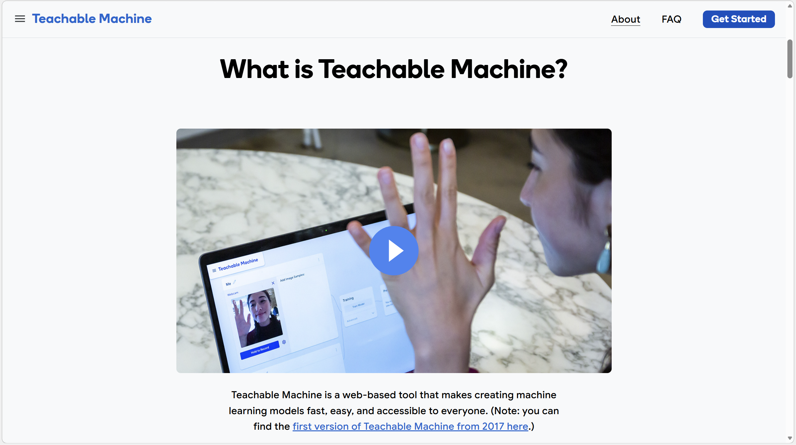
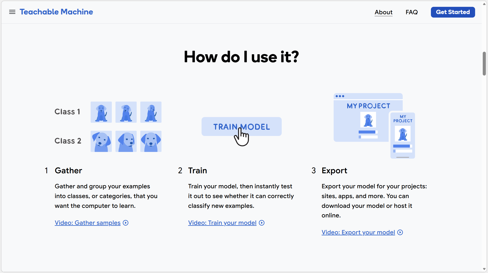
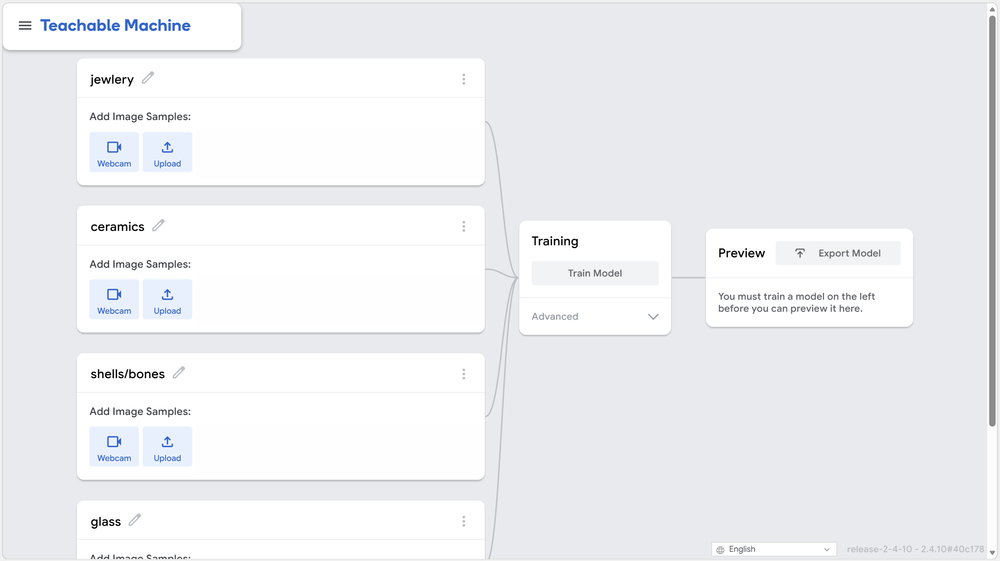
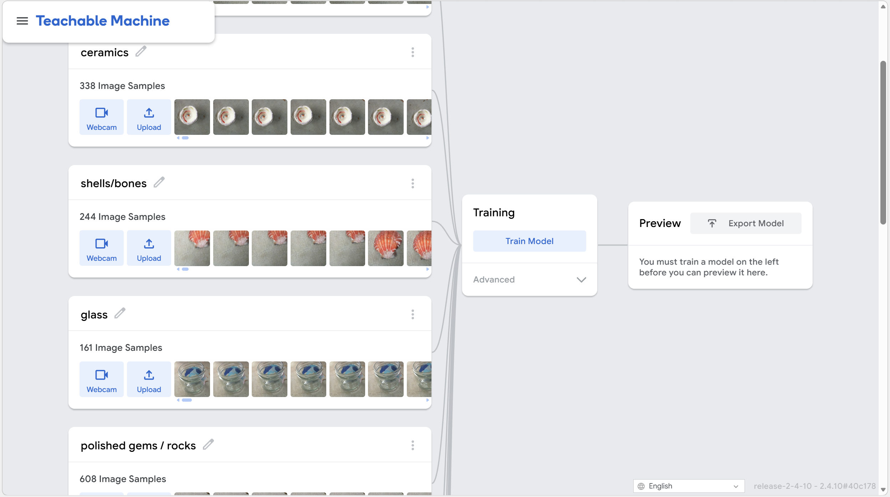
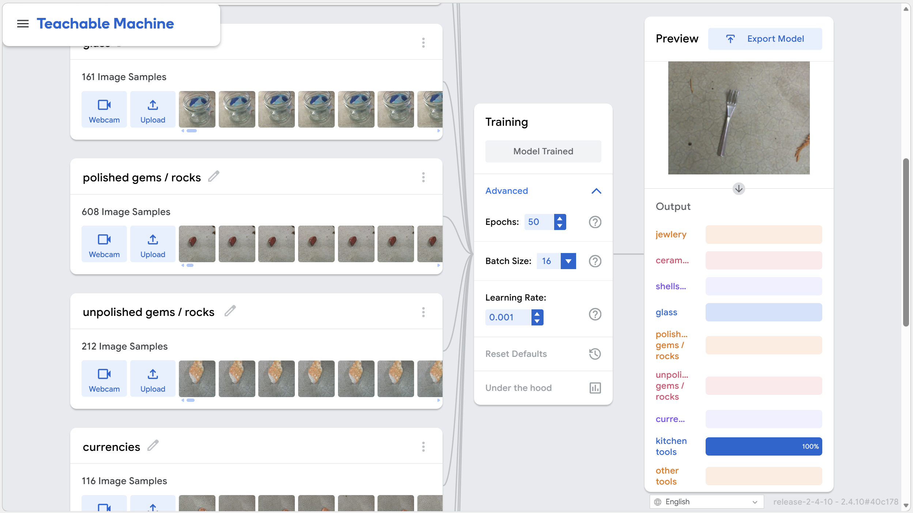

Understanding how we built and trained our artifact detection system
We built a machine learning model trained specifically to identify archaeological artifacts found during field walking. Our model can recognize 10 different types of artifacts, from kitchen tools to ancient currencies. It was trained using Google's Teachable Machine platform with thousands of high-quality artifact images.
Your images stay on your device. When you use our artifact detector, nothing is uploaded to external servers. All image analysis happens locally in your browser using TensorFlow.js. This ensures your field data remains private and secure.
Google's Teachable Machine is a free, web-based tool that makes machine learning accessible to everyone—no coding required. It allows you to train custom AI models using your own images, sounds, or poses without needing deep expertise in computer science or neural networks.


We created 10 different classes in Teachable Machine, each representing a different type of artifact we wanted the model to recognize: Kitchen tools, Jewelry, Ceramics, Shells & Bones, Glass, Polished Gems & Rocks, Unpolished Gems & Rocks, Currencies, Hunting Tools, and Recreation items.

For each class, we photographed artifacts from multiple angles and under different lighting conditions. This diverse training data helps the model recognize artifacts even when they're photographed differently in the field. We uploaded hundreds of images for each category into Teachable Machine.

Teachable Machine uses transfer learning, which means it starts with knowledge from models trained on millions of images and adapts that knowledge to our specific artifact classes. The training process is fast—typically just a few minutes—and the tool provides real-time feedback as the model learns.

When our model analyzes an image, it provides a confidence score for each of the 10 artifact categories. These scores indicate how certain the model is about the identification:
Important: Always verify results with an expert archaeologist. Our model is a helpful tool for initial classification, but human expertise is essential for accurate field archaeology.
Once trained, we tested the model with new images to verify it could accurately identify artifacts. Teachable Machine showed us the confidence scores for each class, helping us understand where the model was strong and where it needed improvement. Finally, we exported the model as a TensorFlow.js file so we could embed it directly into our website.
🔗 Our trained model is hosted on Google Teachable Machine and exported for use on this website. You can view and interact with the model directly here: